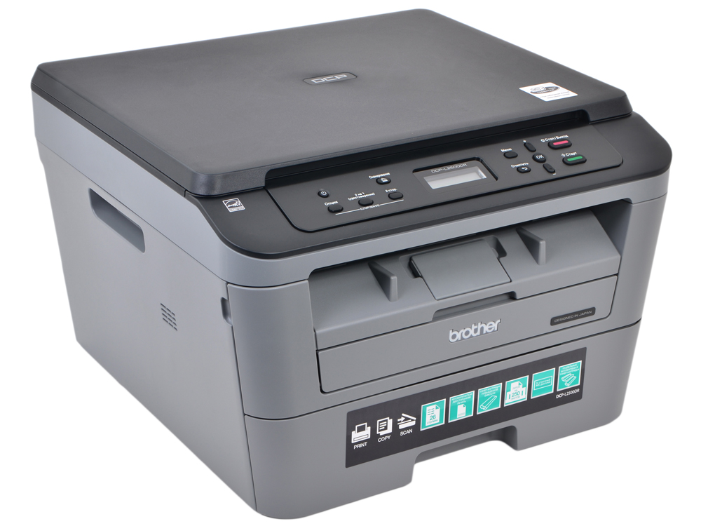

МФУ Canon PIXMA MG2540S
Описание товара

Лазерное черно-белое МФУ, подходящее для небольшого офиса.
Характеристики товара
- Устройство: принтер/сканер/копир
- Цветность печати: черно-белое
- Технология печати: лазерная
- Формат бумаги: A4
- Максимальное разрешение для ч/б печати: 2400×600 dpi
- Габариты (ШхВхГ): 409×267×398 мм
Подробное описание товара
Устройство имеет функцию автоматической двусторонней печати. Поддерживаются ОС Windows, MacOS и Linux.